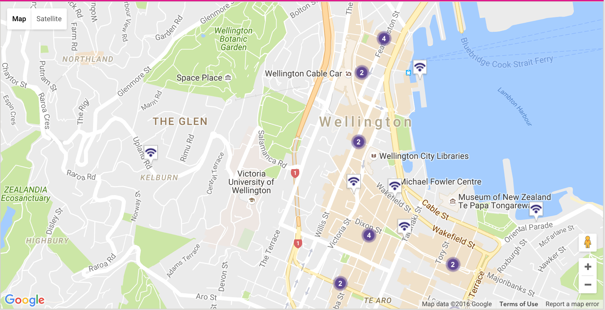

Networking in Wellington City
-The Free Wifi Zones in Wellington offered by the City Council

-The Free Wifi Zones in Wellington Offered by Spark NZ
Throughout the course of the past week, I went and researched about the Wifi zones in wellington. The reason I wanted to reasearch such an aspect was due to the heavy reliance that human beings now place on wifi. Everyone is so busy in being online and connected. I found lots of evidence that the internet and WiFi access are considered highly important to us today and are completely essential to our day to day living.
Whereas we may be able to take a break or two from our family and friends, we can’t, it seems, take such a break from our obsession with access to the online world. Whether it be for social contact, to check our emails, to Google information on anything and everything, or for the up to date world news as it happens.
If there is one technological advancement which has defined the past five years, it is undoubtedly the advent of mobile connectivity. While the computer and subsequently the World Wide Web are without question, two of the most significant developments in human history, the constraints of connectivity have dissolved in recent years, resulting in an ‘always on, always connected’ society.
It was interesting to discover such a vast network that was free to all users who had access to a capable device. This Vast network has come up in the last 5 years and essentially is still a growing network. The interesting part I found was the amount of users that use this network on a day to day basis; The users are not mindful of the dangers that the network possesses such as Malicious Hotspots, Compromised Devices and Snooping.
Snooping is When you connect to an open Wi-Fi network like one at a coffee shop or airport, the network is generally unencrypted You can tell because you don’t have to enter a Password when connecting. Your unencrypted network traffic is then clearly visible to everyone in range. People can see what unencrypted web pages you’re visiting, what you’re typing into unencrypted web forms, and even see which encrypted websites you’re connected to so if you’re connected to your bank’s website, essentially they’d know it, although they wouldn’t know what you were doing.
Compromised laptops and other devices may also be connected to the local network. When connecting, be sure to select the “Public network” Wi-Fi option in Windows and not the Home network or Work network options. The Public network option locks down the connection, ensuring Windows isn’t sharing any files or other sensitive data with the machines on the local network.
Most dangerously, the hotspot you connect to itself may be malicious. This may be because the business’s hotspot was infected, but it may also be because you’re connected to a honeypot network. For example, if you connect to “Public Wi-Fi” in a public place, you can’t be entirely sure that the network is actually a legitimate public Wi-FI network and not one set up by an attacker in an attempt to trick people into connecting.
The research was interesing and intriguing to look at, it was both concerning and amazing to see that people would be willing to risk so much of their privacy just for the satisfaction of being connected. For the assurance to be connected and online people are willing to take such dangerous risks. There are many safe guards of course but nothing is 100 %.
-Azhar Baksh